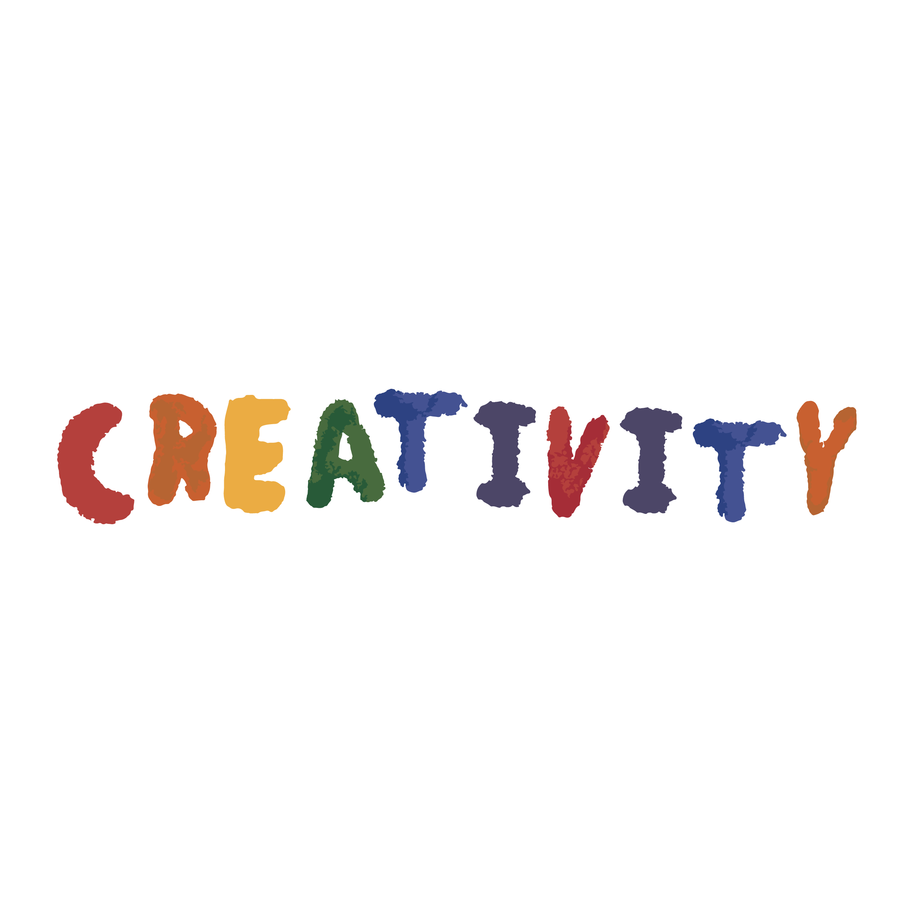

things i found interesting:
-technology is a tool and a form of language; and tools shape the way we behave
-the limited capabilities of these tools is what pushes individuals to make new things by exploiting these limitations or making use of them in unconventional ways
-this my dear friends, is what is referred to as
